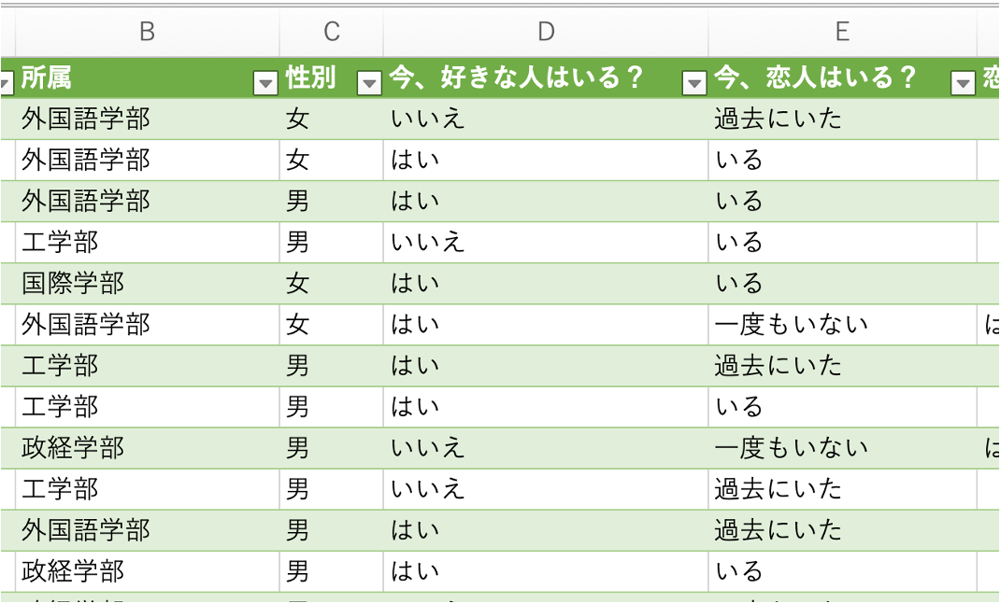
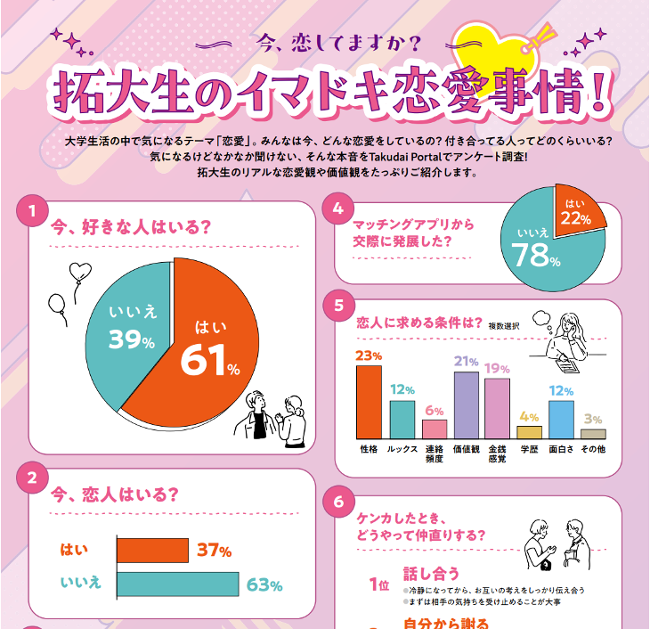
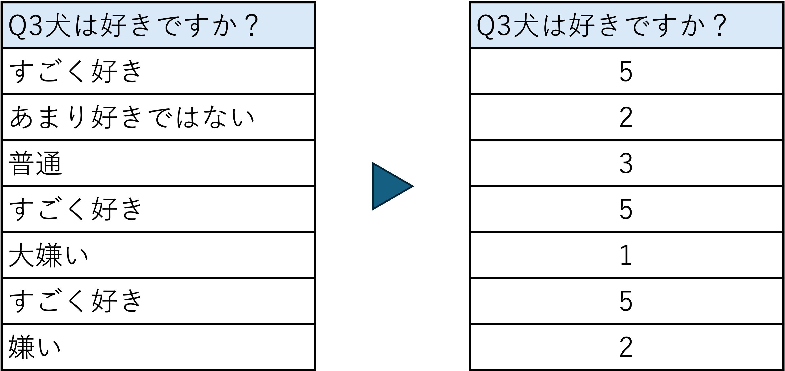
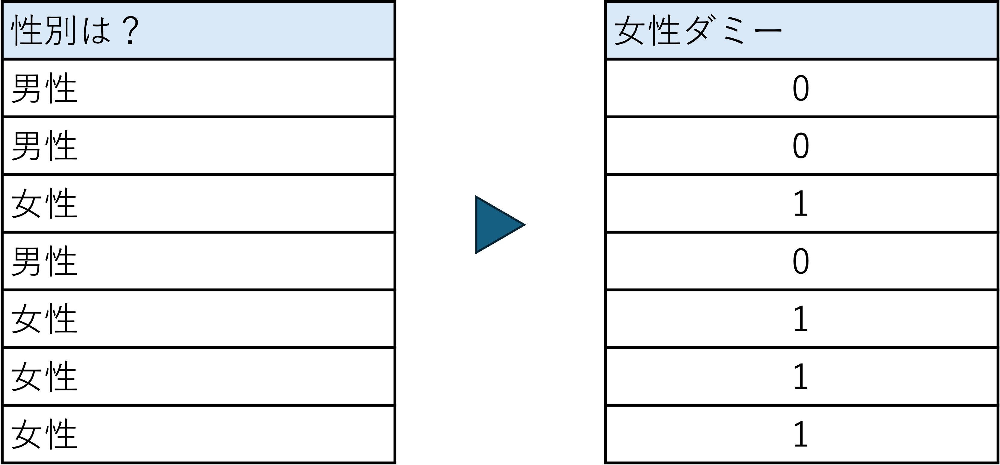
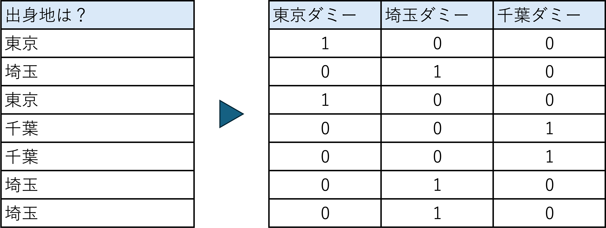
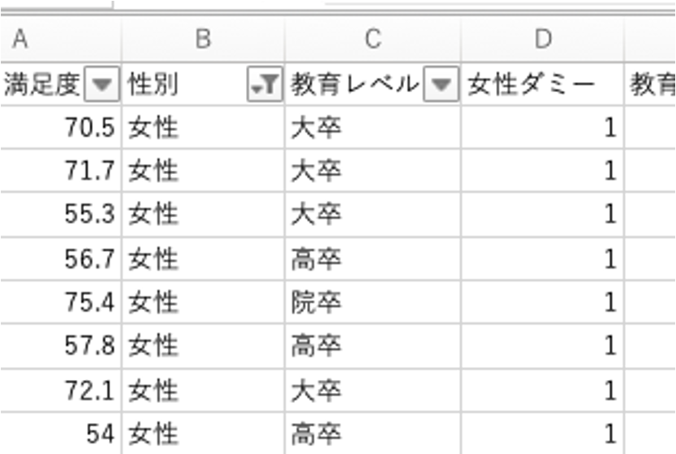
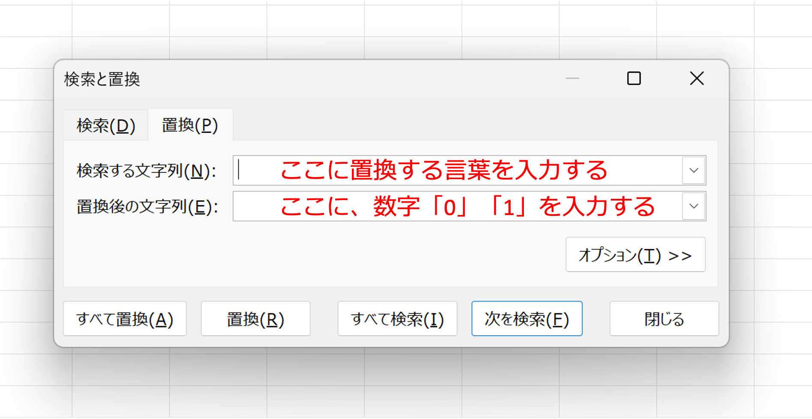
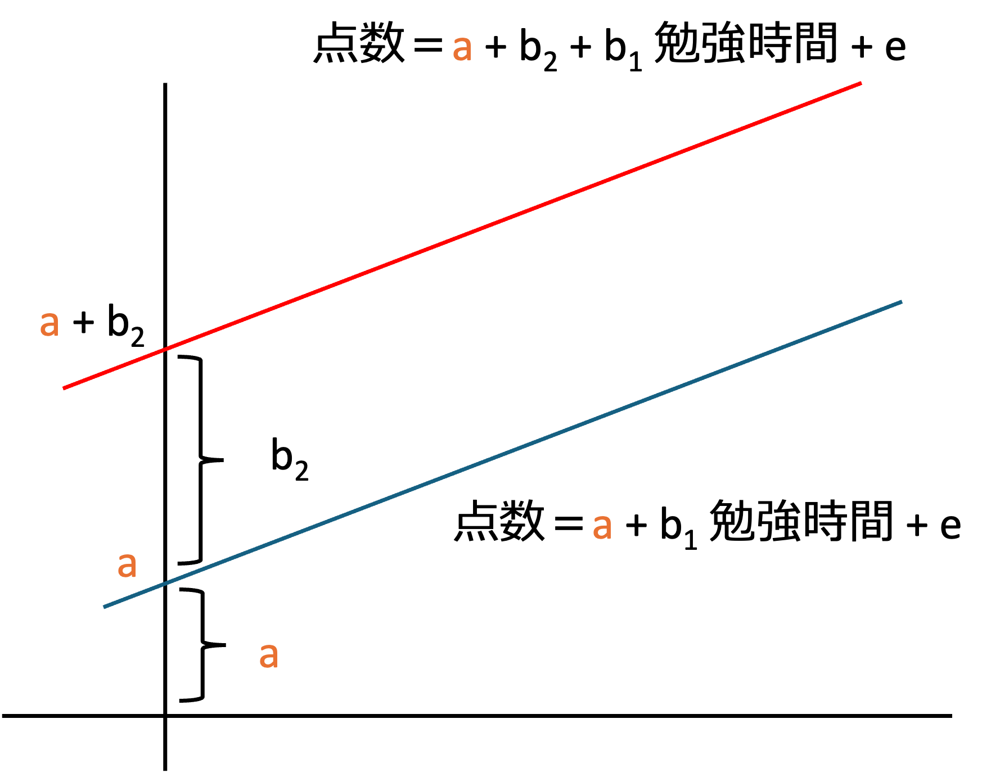
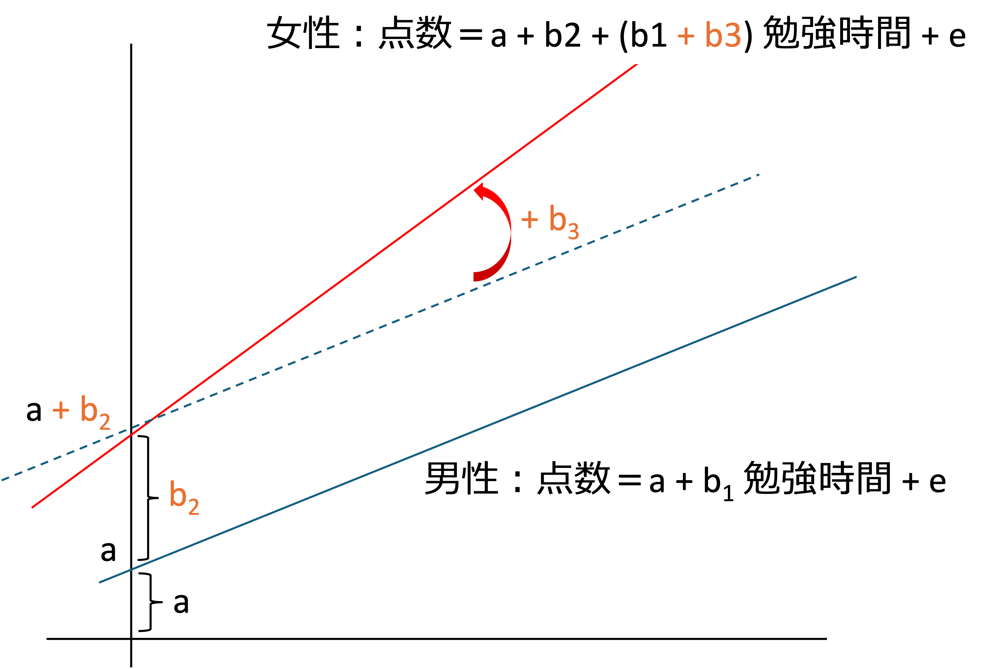
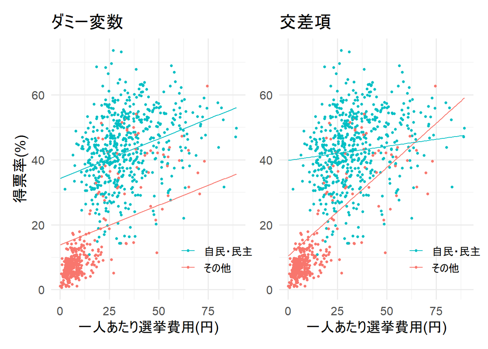

24 質的情報の分析
性別や地域のような「数値ではない情報」を、回帰分析にどう入れるか？
・質的情報を量的情報に変換し、回帰分析する方法
・ダミー変数を説明変数に含む回帰分析、ダミー変数との交差項を含む回帰分析
24.1 質的データ
アンケート調査などでは、所属や性別、「はい・いいえ」のように、数値ではない回答が多く集まります。このような、分類やカテゴリーで表されるデータを質的データ（カテゴリカルデータ）と呼びます。


これまでの回帰分析では、勉強時間や気温のような数値のデータ（量的データ）を使ってきました。今回は、質的データを回帰分析に入れる方法を学びます。
24.2 質的情報の回帰分析
- 質的情報そのものを、直接用いる回帰分析はできません。
- 質的情報を量的データに変換すれば、回帰分析が可能になります。
- 例えば、アンケートの自由回答をカテゴリーに分類・コード化するといった手法を用います。
量的データへの変換
テキスト化された情報（自由回答など）を、あらかじめ定義したカテゴリーに分類し、数値に変換します。変換の方法には、大きく分けて次の2つがあります。
- 順序のある数値に変換する
- 例：「不満」「やや満足」「満足」を、それぞれ「0」「1」「2」に置き換えます。
- 回答に順序（大小関係）がある場合の方法です。次のリッカート尺度も、この考え方です。
- ダミー変数に変換する
- 例：「男性」「女性」を、それぞれ「0」「1」に置き換えます。
- 回答に順序がない場合の方法です。
24.3 リッカート尺度
- アンケートなどで、個人の見解や意識、態度を測定するために使われる手法です。
- 回答者は、提示された文に対して「強くそう思う」から「全くそう思わない」までの段階的な選択肢から、最も近いものを選びます。
- 例えば、次のように数値の尺度に置き換えて、回帰分析に入れます。
| 全くそう思わない | あまりそう思わない | どちらでもない | そう思う | 強くそう思う |
|---|---|---|---|---|
| 0 | 1 | 2 | 3 | 4 |
| \(-2\) | \(-1\) | 0 | 1 | 2 |
- 数字の大きさそのものには意味がなく、間隔が等しくなっていることが大切です。上の表の1行目と2行目のどちらを使っても、回帰分析の傾き（係数）は同じになります。
- ただし、「全くそう思わない」と「あまりそう思わない」の差が、「そう思う」と「強くそう思う」の差と本当に同じかどうかは分かりません。リッカート尺度を数値として使うときは、選択肢の間隔が等しいとみなして分析している、ということに注意してください。
24.4 リッカート尺度から変数を作る
数字の大きさは、間隔が合っていれば、1, 2, 3, 4, 5 でなくても問題ありません。

24.5 ダミー変数
- ダミー変数は、性別や曜日のように数値ではないカテゴリカルデータを、統計解析に使えるように「0」か「1」で表現した変数です。
- これにより、質的なデータも回帰分析などの手法に組み込むことが可能になります。
- 例：女性ダミー（女性は「1」、男性は「0」と入力された変数）
- 例：東京ダミー（東京は「1」、それ以外は「0」と入力された変数）
24.6 ダミー変数を作る（1）
性別のように、カテゴリーが2つの場合は、ダミー変数を1つ作ります。

同時に男性ダミーを作っても良いですが、分析では使いません（理由は、後の「ダミー変数を使う際の留意点」で説明します）。
24.7 ダミー変数を作る（2）
出身地のように、カテゴリーが3つ以上の場合は、カテゴリーごとにダミー変数を作ります。

3種類のダミー変数を作りましたが、実際に分析で使うのは2つです（理由は、次の「ダミー変数を使う際の留意点」で説明します）。
24.8 ダミー変数を使う際の留意点
- カテゴリカル変数のすべてのカテゴリーに対してダミー変数を作成し、回帰分析に加えた場合、ダミー変数の和が常に1になります。
- そのため、切片とダミー変数の間に完全な線形の関係が生じ（完全な多重共線性が生じ）、回帰分析が推計できません。
- 何からの変化か（基準）が分からなくなる、ということです。
- この問題を解決するには、カテゴリーの数よりも1つ少ない数のダミー変数を使い、残りの1つのカテゴリーを基準（参照カテゴリー）とします。
推計できない式（すべてのダミー変数を入れた場合。基準がないため）
\[ y_i = a + b_1\,\text{東京}_i + b_2\,\text{埼玉}_i + b_3\,\text{千葉}_i + \cdots + b_k x_{ki} + e_i \]
推計できる式（東京を基準として、東京ダミーを式に入れない場合）
\[ y_i = a + b_2\,\text{埼玉}_i + b_3\,\text{千葉}_i + \cdots + b_k x_{ki} + e_i \]
- \(b_2\) の値は、東京と比べて埼玉になった場合の変化量、\(b_3\) の値は、東京と比べて千葉になった場合の変化量を表します。
- 基準（参照カテゴリー）は自分で決めます。どれを基準にしても、分析全体の当てはまり（決定係数など）は変わりません。変わるのは「何と比べた差として係数を読むか」だけです。
- 性別の場合も同じで、女性ダミーだけを入れると、男性が基準になります。
Noteなぜすべてのダミー変数を入れると推計できないのか？
切片を「変数の係数」として書き直す
回帰式は、ふつう次のように書きます。
\[ y_i = a + b_1 x_{1i} + e_i \]
ここで、\(a\) の後ろには何も掛かっていないように見えますが、実は「1」が掛かっていると考えることができます。
\[ y_i = a \times 1 + b_1 x_{1i} + e_i \]
この「1」は、どの人についても同じ値1をとる変数です。つまり、回帰分析では、データの中にすべての行が1になっている見えない列があり、その列の係数が切片 \(a\) だと考えられます。エクセルの分析ツールは、この「すべて1の列」を自動的に加えて計算しているので、私たちが入力しなくても切片が出力されます。
3つのダミー変数を全部入れると何が起きるか
5人のデータで、見えない「1の列」も書き出してみます。
| 人 | 切片の列（見えない） | 東京 | 埼玉 | 千葉 | 東京 + 埼玉 + 千葉 |
|---|---|---|---|---|---|
| A（東京） | 1 | 1 | 0 | 0 | 1 |
| B（埼玉） | 1 | 0 | 1 | 0 | 1 |
| C（東京） | 1 | 1 | 0 | 0 | 1 |
| D（千葉） | 1 | 0 | 0 | 1 | 1 |
| E（埼玉） | 1 | 0 | 1 | 0 | 1 |
一番右の列（3つのダミー変数の合計）は、誰もが必ずどれか1つに当てはまるので、すべての人で1になります。これは、切片の列とまったく同じです。つまり、すべての人について次の関係が成り立っています。
\[ \text{切片の列} = \text{東京} + \text{埼玉} + \text{千葉} \]
なぜ推計できなくなるのか
この関係があると、係数の組み合わせが1つに決まりません。例えば、次の2つの式を比べます。
- 式1：\(y = 50 + 0 \times \text{東京} - 3 \times \text{埼玉} - 5 \times \text{千葉}\)
- 式2：\(y = 40 + 10 \times \text{東京} + 7 \times \text{埼玉} + 5 \times \text{千葉}\)
式2は、式1の切片を10減らし、3つの係数をすべて10増やしたものです。それぞれの人の予測値を計算すると、次のようにまったく同じになります。
- 東京の人：式1は \(50 + 0 = 50\)、式2は \(40 + 10 = 50\)
- 埼玉の人：式1は \(50 - 3 = 47\)、式2は \(40 + 7 = 47\)
- 千葉の人：式1は \(50 - 5 = 45\)、式2は \(40 + 5 = 45\)
10でなくても、どんな数でも同じことができるので、「残差の二乗和を最小にする係数」が無数にあり、1つに決められません。これが「推計できない」ということです。
1つ除くと解決する理由
例えば東京ダミーを除くと、残るのは「切片の列（すべて1）」「埼玉」「千葉」です。「埼玉 + 千葉」は、東京の人では0、それ以外の人では1になるので、切片の列（すべて1）とは一致しません。そのため、係数が1つに決まります。
そして、東京の人は埼玉も千葉も0なので、東京の人の予測値は切片 \(a\) そのものになり、埼玉と千葉の係数は「東京と比べた差」として読めるようになります。
補足：切片をなくす方法
逆に、切片をなくせば、3つのダミー変数をすべて入れて推計することもできます（エクセルの回帰分析で「定数に0を使用」にチェックを入れる方法です）。この場合、3つの係数は、それぞれ東京・埼玉・千葉の平均的な値（他の変数を一定とした場合）になります。ただし、決定係数の計算方法が変わるなど扱いが難しくなるので、この授業では「切片を残して、ダミー変数を1つ除く」方法を基本とします。
24.9 エクセルでのダミー変数の作り方
エクセルでダミー変数を作るには、主に次の3つの方法があります。
方法1：IF 関数を使う（おすすめ）
性別がB列（B2〜B101）に入力されているとき、女性ダミーを作るには、空いている列の2行目に次の式を入力し、最後の行までコピーします。
=IF(B2="女性", 1, 0)- 「B2が『女性』なら1、そうでなければ0」という意味です。
- 元のデータを書き換えないので、間違えてもやり直せます。
- カテゴリーが3つ以上の場合も、同じように作れます。例えば、アクセス方法がC列に入っているときは、次のようにそれぞれの列を作ります。
=IF(C2="スマホ", 1, 0)
=IF(C2="タブレット", 1, 0)"女性"の部分は、データの文字と完全に一致している必要があります（「女性」と「女性 」（空白付き）は別の文字として扱われます）。
方法2：フィルター（リスト）を使って値を入力する

- データの見出しの行を選び、「データ」→「フィルター」を選びます。
- 性別の列の ▼ をクリックし、「女性」だけを表示します。
- 表示された行のダミー変数の列に「1」を入力し、下の行までコピーします。
- 次に「男性」だけを表示し、ダミー変数の列に「0」を入力します。
- 最後に、フィルターを解除してすべての行を表示し、入力漏れがないか確認します。
方法3：置換機能を使う

- 変換したい列をコピーして、ダミー変数用の新しい列を作ります（元の列を置換すると、元のデータが消えてしまうためです）。
- コピーした列の範囲を選択します。
- 「Ctrl + H」で「検索と置換」を表示し、変換前（例：「女性」）と変換後（例：「1」）を入力して、「すべて置換」を押します。
- 同じように、「男性」を「0」に置換します。
24.10 ダミー変数の意味
\[ \text{点数} = a + b_1\,\text{勉強時間} + b_2\,\text{女性ダミー} + e \]
女性ダミーが1の場合（女性の場合）
\[ \text{点数} = a + b_1\,\text{勉強時間} + b_2 \times 1 + e = (a + b_2) + b_1\,\text{勉強時間} + e \]
女性ダミーが0の場合（男性の場合）
\[ \text{点数} = a + b_1\,\text{勉強時間} + b_2 \times 0 + e = a + b_1\,\text{勉強時間} + e \]
- つまり、男性の切片は \(a\) であり、女性の切片は \(a + b_2\) となります。傾き（勉強時間の効果 \(b_1\)）は、男女で同じです。
- したがって、勉強時間が同じであれば、女性の方が \(b_2\) だけ平均的に点数が高い（\(b_2\) がマイナスなら低い）ということになります。

24.11 ダミー変数を含む回帰分析の例
演習ファイルの「練習_1」シートは、ある会社の職場の満足度を調査したデータ（100人）です。満足度を被説明変数、女性ダミーと教育レベルを説明変数として、重回帰分析を行います。
- 女性ダミー：女性は1、男性は0（男性が基準）
- 教育レベル：高卒は1、大卒は2、院卒は3（順序のある数値に変換）
手順1：仮説を設定する
女性ダミーについては、次の仮説を検定します。
- 帰無仮説（\(H_0\)）：\(\beta_{\text{女性}} = 0\)（教育レベルが同じなら、男女で満足度の平均に差はない）
- 対立仮説（\(H_1\)）：\(\beta_{\text{女性}} \neq 0\)（教育レベルが同じでも、男女で満足度の平均に差がある）
教育レベルについても、同じように「\(\beta_{\text{教育}} = 0\)（性別が同じなら、教育レベルと満足度は関係しない）」を検定します。
手順2：有意水準（臨界値）を決める
有意水準は5%（両側検定）とします。自由度は \(n - K = 100 - 3 = 97\) なので、臨界値は1.985です。
手順3：検定統計量 \(t\) を求める
エクセルの分析ツール「回帰分析」の結果は、次のとおりです。
| 係数 | 標準誤差 | \(t\) | P値 | |
|---|---|---|---|---|
| 切片 | 53.489 | 1.677 | 31.896 | 0.000 |
| 女性ダミー | 5.631 | 1.181 | 4.769 | 0.000007 |
| 教育レベル | 4.404 | 0.682 | 6.457 | 0.000000004 |
決定係数 \(R^2 = 0.388\)、自由度調整済み決定係数 \(\bar{R}^2 = 0.375\)、観測数100
手順4：検定統計量と臨界値を比較する 手順5：検定の結論を出す
- 女性ダミー：\(t = 4.769\) は臨界値1.985より大きいので、帰無仮説は棄却されます。教育レベルが同じであれば、女性は男性に比べて、満足度が平均的に5.6ポイント高く、この差は有意です。
- 教育レベル：\(t = 6.457\) は臨界値1.985より大きいので、帰無仮説は棄却されます。性別が同じであれば、教育レベルが1段階上がると、満足度は平均的に4.4ポイント高く、この関係は有意です。
回帰式を男女別に書くと、次のようになります。
\[ \text{男性：満足度} = 53.49 + 4.40 \times \text{教育レベル} \]
\[ \text{女性：満足度} = (53.49 + 5.63) + 4.40 \times \text{教育レベル} = 59.12 + 4.40 \times \text{教育レベル} \]
Note教育レベルを「1, 2, 3」とするか、ダミー変数にするか
- この例では、教育レベルを「高卒 = 1、大卒 = 2、院卒 = 3」という順序のある数値にしています。これは、「高卒から大卒」と「大卒から院卒」で、満足度の変化が同じ（どちらも4.4ポイント）と仮定していることになります。
- この仮定を置きたくない場合は、高卒を基準として、大卒ダミーと院卒ダミーの2つを使います。「練習_1」のデータでこの方法で計算すると、大卒は高卒より3.8ポイント、院卒は高卒より8.8ポイント満足度が高い（どちらも有意）という結果になり、1段階ごとの変化が同じとは限らないことが分かります。
- どちらの方法を使うかは、分析の目的とデータに合わせて決めます。
24.12 3つ以上のカテゴリーのダミー変数の例
演習ファイルの「練習_2」シートは、あるSNSの利用者の満足度と、性別、アクセス方法（スマホ、タブレット、PC）を調査したデータです。アクセス方法は3つのカテゴリーがあるので、スマホダミー、タブレットダミー、PCダミーの3つを作りますが、分析に入れるのは2つです。
ここでは、PCを基準として、スマホダミーとタブレットダミーを入れて分析します。
| 係数 | 標準誤差 | \(t\) | P値 | |
|---|---|---|---|---|
| 切片 | 70.593 | 1.592 | 44.333 | 0.000 |
| 女性ダミー | 2.372 | 1.364 | 1.739 | 0.085 |
| スマホ | \(-6.246\) | 1.915 | \(-3.262\) | 0.002 |
| タブレット | \(-5.053\) | 1.785 | \(-2.831\) | 0.006 |
自由度 \(n - K = 100 - 4 = 96\)、有意水準5%（両側）の臨界値は1.985です。
- スマホ：性別が同じであれば、PCでアクセスする人に比べて、スマホでアクセスする人は満足度が平均的に6.2ポイント低く、この差は有意です。
- タブレット：性別が同じであれば、PCでアクセスする人に比べて、タブレットでアクセスする人は満足度が平均的に5.1ポイント低く、この差は有意です。
- 女性ダミー：P値は0.085で、有意水準5%では有意ではありません。つまり、アクセス方法が同じなら、男女で満足度に差があるとはいえません。
- スマホとタブレットの係数は、どちらも「PCと比べた差」です。スマホとタブレットを比べたい場合は、どちらかを基準にして分析し直します（係数の差 \(-6.246 - (-5.053) = -1.19\) が、タブレットと比べたスマホの差になります）。
24.13 ダミー変数と連続変数の交差項
ダミー変数と連続変数を掛け合わせた変数を交差項（交互作用項）と呼びます。交差項を入れると、男女で傾き（勉強時間の効果）が異なることを表せます。
\[ \text{点数} = a + b_1\,\text{勉強時間} + b_2\,\text{女性ダミー} + b_3\,(\text{勉強時間} \times \text{女性ダミー}) + e \]
女性ダミーが1の場合（女性の場合）
\[ \text{点数} = a + b_1\,\text{勉強時間} + b_2 \times 1 + b_3\,\text{勉強時間} \times 1 + e = (a + b_2) + (b_1 + b_3)\,\text{勉強時間} + e \]
女性ダミーが0の場合（男性の場合）
\[ \text{点数} = a + b_1\,\text{勉強時間} + b_2 \times 0 + b_3\,\text{勉強時間} \times 0 + e = a + b_1\,\text{勉強時間} + e \]
- つまり、男性の切片は \(a\)、女性の切片は \(a + b_2\) となり、さらに、男性の傾きは \(b_1\)、女性の傾きは \(b_1 + b_3\) となります。
- 男性と女性で、傾き（勉強時間の影響）が異なります。女性の方が \(b_3\) だけ、勉強時間の影響が大きい（\(b_3\) がマイナスなら小さい）ということです。
- 交差項を入れた場合、\(b_2\) は「勉強時間が0のときの男女の差」を表します。勉強時間によって男女の差が変わるので、\(b_2\) だけを見て「女性の方が \(b_2\) 点高い」とは言えなくなることに注意してください。

24.14 交差項を含む回帰分析の例
演習ファイルの「練習_3」シートは、生徒の成績と、授業時間、家庭学習の有無（有 = 1、無 = 0）、学年のデータです。「授業時間の効果が、家庭学習の有無によって異なるか」を調べるため、交差項（授業時間 × 家庭学習有無）を加えて分析します。
手順1：仮説を設定する
交差項については、次の仮説を検定します。
- 帰無仮説（\(H_0\)）：\(\beta_{\text{交差項}} = 0\)（授業時間の効果は、家庭学習の有無によって変わらない）
- 対立仮説（\(H_1\)）：\(\beta_{\text{交差項}} \neq 0\)（授業時間の効果は、家庭学習の有無によって変わる）
手順2：有意水準（臨界値）を決める
有意水準は5%（両側検定）とします。自由度は \(n - K = 100 - 5 = 95\) なので、臨界値は1.985です。
手順3：検定統計量 \(t\) を求める
| 係数 | 標準誤差 | \(t\) | P値 | |
|---|---|---|---|---|
| 切片 | 46.230 | 2.192 | 21.087 | 0.000 |
| 授業時間 | 2.199 | 0.114 | 19.290 | 0.000 |
| 家庭学習有無 | 6.534 | 2.829 | 2.309 | 0.023 |
| 学年 | 1.883 | 0.306 | 6.162 | 0.000 |
| 授業時間 × 家庭学習有無 | 1.465 | 0.174 | 8.416 | 0.000 |
決定係数 \(R^2 = 0.959\)、自由度調整済み決定係数 \(\bar{R}^2 = 0.957\)、観測数100
手順4：検定統計量と臨界値を比較する 手順5：検定の結論を出す
- 交差項：\(t = 8.416\) は臨界値1.985より大きいので、帰無仮説は棄却されます。授業時間の効果は、家庭学習の有無によって有意に異なります。
家庭学習の有無ごとに回帰式を書くと、次のようになります（学年が同じ生徒で比べた場合）。
\[ \text{家庭学習なし：成績} = 46.23 + 2.20 \times \text{授業時間} + 1.88 \times \text{学年} \]
\[ \text{家庭学習あり：成績} = (46.23 + 6.53) + (2.20 + 1.47) \times \text{授業時間} + 1.88 \times \text{学年} \]
- 授業時間：家庭学習をしていない生徒では、授業時間が1時間増えると、成績は2.2点上がります。
- 交差項：家庭学習をしている生徒では、授業時間1時間あたりの効果が、さらに1.47点大きく、\(2.20 + 1.47 = 3.67\) 点になります。
- 家庭学習有無：係数6.53は、「授業時間が0のとき」の家庭学習の有無による差です。授業時間が長いほど差は大きくなり、例えば授業時間が平均の約15時間のときは、\(6.53 + 1.47 \times 15.3 = 29.0\) 点の差になります。「家庭学習をすると成績が6.5点上がる」とは読めないことに注意してください。
- 学年：学年が1つ上がると、成績は1.9点上がります。
24.15 ダミー変数と交差項のイメージ
実際のデータ（選挙の得票率と一人あたりの選挙費用）で、ダミー変数だけを入れた場合と、交差項も入れた場合の違いを見てみましょう。

- 左の図（ダミー変数のみ）では、2本の直線が平行で、切片だけが違います。
- 右の図（交差項あり）では、2本の直線の傾きも違います。「その他」の政党の候補者の方が、選挙費用が得票率に与える影響（傾き）が大きいことが分かります。
24.16 ダミー変数と交差項を確かめよう
男性と女性の「本当の切片の差」と「本当の傾きの差」を決めて、100人分のデータ（勉強時間と点数）を作り、「ダミー変数のみ」と「交差項あり」の2つの方法で分析してみましょう。
- データは、「男性：点数 = 40 + 2 × 勉強時間」、「女性：点数 = (40 + 切片の差) + (2 + 傾きの差) × 勉強時間」に誤差を加えて作っています。
- 「ダミー変数のみ」では、2本の直線は必ず平行になります。「本当の傾きの差」を大きくしても、直線は平行のままなので、データにうまく当てはまりません。
- 「交差項あり」に切り替えると、2本の直線の傾きが変わり、データに合うようになります。推定された \(b_3\) が、「本当の傾きの差」に近い値になることを確認してください。
- 「本当の傾きの差」を0にすると、交差項ありで分析しても \(b_3\) はほぼ0になり、2本の直線はほぼ平行になります。
24.17 エクセルでの計算方法
ダミー変数を含む回帰分析（練習_1、練習_2）
- 上の「エクセルでのダミー変数の作り方」の方法で、ダミー変数の列を作ります。
- 分析に使う説明変数（ダミー変数を含む）の列を、隣り合うように並べます。
- 「データ」→「データ分析」→「回帰分析」を選び、「入力 Y 範囲」に被説明変数、「入力 X 範囲」に説明変数の列をまとめて指定します。
- 3つ以上のカテゴリーがある場合は、基準にするカテゴリーのダミー変数を「入力 X 範囲」に含めないようにします（例：練習_2 で PC を基準にする場合は、女性ダミー、スマホ、タブレットの3列を指定します）。
- すべてのダミー変数を含めてしまうと、正しく推計されず、係数が0になったり、エラーや意味のない値が表示されたりします。
交差項を含む回帰分析（練習_3）
授業時間がB列、家庭学習有無がC列に入力されているとき、交差項の列（例：E列）の2行目に次の式を入力し、最後の行までコピーします。
=B2*C2- 家庭学習をしていない生徒（C列が0）は、交差項も0になります。家庭学習をしている生徒（C列が1）は、交差項が授業時間と同じ値になります。
- 分析ツールの「入力 X 範囲」には、授業時間、家庭学習有無、学年、交差項の4列を指定します。
- 交差項を入れるときは、交差項のもとになった2つの変数（授業時間と家庭学習有無）も、必ず式に入れておきます。